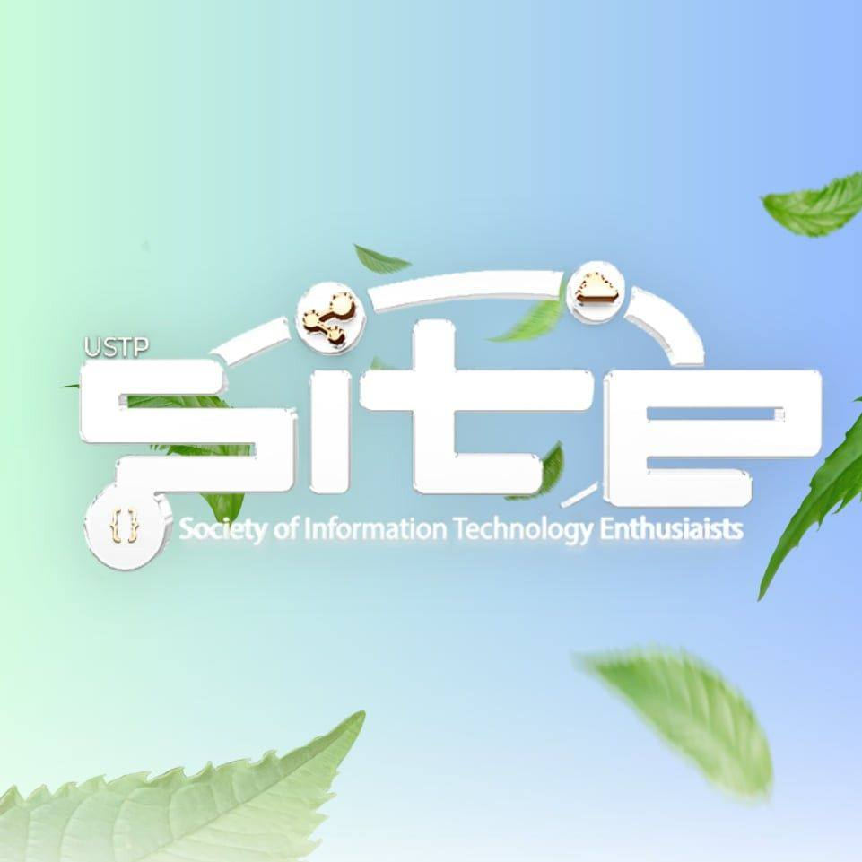
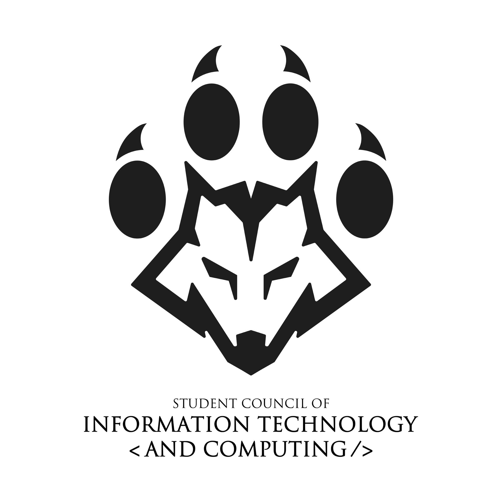
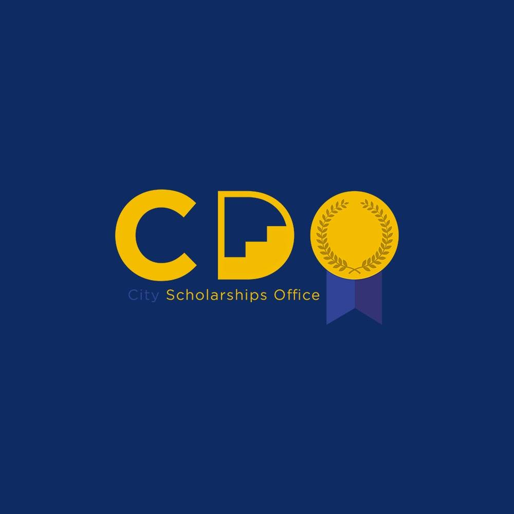

Circulo de Entablado aims to engage productivity in the collaborative process,
build intellectual and aesthetic understanding of the craft and techniques of theatre arts,
develop an appreciation of and respect for the various roles/aspects inherent within.

Society of Information Technology Enthusiasts
SITE is a community of passionate individuals dedicated to advancing knowledge
and collaboration in the field of Information Technology, fostering innovation,
and providing networking opportunities for aspiring IT professionals.

Student Council of Information Technology and Computing
SCITC represents IT students, advocating for their needs, fostering academic growth,
and creating opportunities for leadership, innovation, and industry collaboration.

ISkolar sa DAkbayan
ISDA is an organization committed to empowering scholars through mentorship,
skill development, and community engagement, fostering leadership and social responsibility.